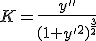
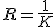
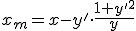
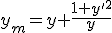

parent nodes: Hauptfenster | KurvenprofiHilfe
Spur
Spur <Strg s>
Bei jeder Bewegung (links und rechts) des Kreuzes bleibt das Kreuz am Graphen 'kleben'. Die angegebenen Koordinaten in der Statuszeile sind dann die genauen Koordinaten des Punktes auf dem Graphen.
Bei der Bewegung (auf und ab) springt das Kreuz auf den Graphen der Funktion, die an dieser Stelle den nächst größeren bzw. kleineren Funktionswert hat.
Tangente <Strg t>
Im Spurmodus wird die Tangente am Graphen durch das Kreuz gezeichnet.
Normale <Strg n>
Es wird die Senkrechte am Graphen durch das Kreuz gezeichnet. Wenn die Achsen keine gleiche Skalierung haben oder die Bildschirmeinstellung falsch ist, kann die Normale falsch aussehen.
Krümmung <Strg k>
Es wird der Kreis an den Graphen gezeichnet, der in diesem Punkt dieselbe Krümmung hat.
Ableitung <Strg d>
Im Spurmodus wird die Ableitung der Funktion gezeichnet
Die Funktionsterme der Tangente, der Normalen und des Steigungsdreiecks können im Termfenster mit der rechten Maustaste eingefügt werden.
Den Ableitungsterm einer Funktion erhält man auf der Karteikarte Algebra oder kürzer, indem in der gewünschten Zeile 'Ableitungsterm kopieren' /<strg a> gewählt wird und dann die Zwischenablage in eine beliebige Zeile eingefügt wird. <strg v>
Die Taylorentwicklung einer Funktion und viele weitere Operationen finden sich auf der Seite Algebra.
Formeln für die Krümmung:

Radius:

Krümmungsmittelpunkt:


Die Änderung der Farben von Tangente, Normale... kann in Einstellungen vorgenommen werden